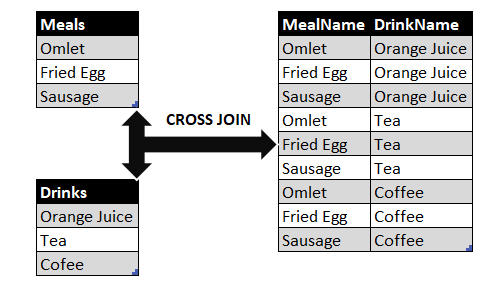
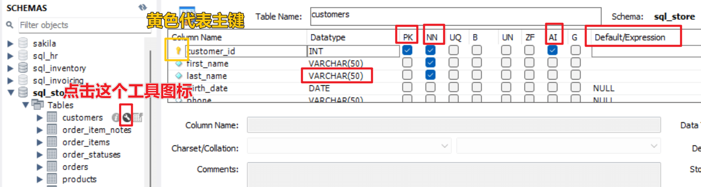

SQL 数据库¶
单表查询¶
SELECT¶
SELECT
name
price
price*0.9 AS 'discouted price'
FROM
tablename
WHERE
NOT (age < 10 OR (price > 100 AND city=Shanghai))
ORDER BY
name
SQL语句不区分大小写，即SELECT、Select、select是同样的。但建议关键词用大写，方便阅读，让代码更规范。- 可以在1中做算术运算，生成新的列，并用1自定义列名。
WHERE用于筛选。其中，AND的优先级比OR高。也就是说，age < 10 OR price > 100 AND city=Shanghai相当于age < 10 OR (price > 100 AND city=Shanghai)。
WHERE 筛选¶
不允许在 WHERE 语句后面引用别名，可以用 HAVING 代替 WHERE 。
题目
牛客网题目 易错点，执行顺序是 from -> where -> group by -> having -> select -> order by -> limit。
所以如果在 where 后面限制 total_price，这时候 select 里的 SUM 都没开始计算，OrderItems里没有 total_price，所以会报错 where 找不到 total_price。
DISTINCT：提取唯一值¶
-- 选择所有不同的特定列（这里是 country 列）的唯一值
SELECT DISTINCT country
FROM customers;
如果 customers 表中有多个相同的国家，那么该查询将仅返回一个该国家的唯一值，而不是每个重复的实例。
这是适用于许多情况的有用的功能，例如从表中查找唯一值以进行分析或过滤掉重复值，以使结果更具可读性。
IN：等于多个值中的一个¶
SELECT *
FROM customers
WHERE state IN ('VA', 'NY', 'CA') # (1)!
- IN 后面用圆括号，而不是方括号。
等价于
SELECT *
FROM customers
WHERE state = 'VA' OR state = 'NY' OR state = 'CA'
BETWEEN：介于两者之间¶
SELECT *
FROM customers
WHERE points BETWEEN 100 AND 200
等价于（两端是大于等于和小于等于，而不是大于和小于）
SELECT *
FROM customers
WHERE points >= 100 AND points <= 200
LIKE：筛选字符串¶
SELECT *
FROM customers
WHERE first_name LIKE 'b%'
%代表任意长度的字符，可以是 0 个。- 这句话意思是筛选出
first_name是以b或B开头的数据。
SELECT *
FROM customers
WHERE first_name LIKE '%b%'
_代表一个长度的字符，不能多也不能少，必须刚好一个长度。- 这句话意思是筛选出
first_name是以b或B结尾的，且前面有一个字符的数据。
REGEXP: 正则表达式筛选字符串¶
SELECT *
FROM customers
WHERE first_name REGEXP '^a' # (1)!
REGEXP后面用单引号将正则表达式放入其中。- ^: beginning of a string
- $: end of a string
- |: logical OR
- [abc]: match any single characters
- [a-d]: any characters from a to d，这样就不用把 [abcd] 全部写出来了。
SUBSTRING：从一个字符串中提取一个子字符串¶
SUBSTRING 需要至少两个参数：要提取的字符串和要提取的子字符串的起始位置。
SUBSTRING 的语法如下：
SUBSTRING(string, start_position, length)
其中，
- string 是要提取子字符串的原始字符串。
- start_position 是子字符串的起始位置，可以是一个整数值或一个表达式。
- length 是要提取的子字符串长度，可以是一个整数值或一个表达式。如果省略此参数，则将提取从起始位置到字符串末尾的所有字符。
例如，以下代码将从字符串 "Hello, world!" 中提取子字符串 "world"：
SELECT SUBSTRING('Hello, world!', 8, 5);
输出：
world
SUBSTRING() 还支持在 WHERE 子句中使用，以过滤基于子字符串的查询结果。
CONCAT()：连接两个或多个字符串¶
在 SQL 中，CONCAT() 函数用于将两个或多个字符串连接在一起。它接受任意数量的字符串参数，并将它们连接成一个字符串。
语法：
CONCAT(string1, string2, ...)
参数： - string1, string2, ...：要连接的字符串。
返回值：
- 连接后的字符串。
示例：
SELECT CONCAT('Hello', ' ', 'World') AS Greeting;
输出：
Hello World
注意：
- 如果任何一个参数为 NULL，则整个结果为 NULL。
- 如果参数都是数字，则它们将被转换为字符串并连接在一起。
IS NULL：筛选空值¶
SELECT *
FROM customers
WHERE phone IS NULL
ORDER BY：排序¶
SELECT *
FROM customers
ORDER BY state, first_name DESC
ORDER BY两个字段，实现双重排序。DESC是按降序排列。
还可以按多列排序，如下所示：
SELECT *
FROM table_name
ORDER BY column1 ASC, column2 DESC;
其中，column1 表示第一列，ASC 表示升序排列，column2 表示第二列，DESC 表示降序排列。
注意
ORDER BY 语句必须放在 WHERE 之后。
LIMIT：取前几条数据¶
SELECT *
FROM customers
LIMIT 3
- 限制返回的结果条数。最终只返回 3 条数据。
SELECT *
FROM customers
LIMIT 6, 3
- 先跳过前 6 条数据，再返回第 7 至 9 条数据。
连接¶
INNER JOIN：内连接¶
SELECT c.customer_id, first_name, last_name
FROM customers c
JOIN orders o
ON c.customer_id = o.customer_id
FROM customers c是给customers起一个别名c，之后就可以用c来代替customers，起到简化代码的作用。
- 因为内连接的逻辑是按照c.customer_id = o.customer_id进行连接，所以得到的表有两列都是customer_id。这个时候，如果我们想SELECT customer_id，就必须指定customer_id是来自哪个表（其实来自哪个表都一样，因为本来就是内连接的，所以结果中的customer_id必然一样）。例如上面的代码就指定来自c.customer_id。如果不指定，则会报错说 ambiguous。
从不同的数据库中跨表连接¶
SELECT *
FROM customers c
JOIN sql_inventory.product p
ON c.customer_id = o.customer_id
- 由于
product在sql_inventory数据库，所以customers和product不在同一个数据库，在对它们进行连接时需要指定product在sql_inventory数据库。 - 只需要指定那些不在当前数据库中的数据表。如果数据表本来就在当前数据库，则不需要指定了。
将同一张表当作两张表进行连接（自身连接）¶
一张表中有员工 ID和员工对应的经理，我们想找到员工和经理的对应关系。
SELECT
e.employee_id,
e.first_name,
m.first_name AS manager
FROM emploees e
JOIN emploees m
ON e.reports_to = m.employee_id
- 可以将同一张表设置多个别名，当成多个表来使用。
OUTER JOIN：外连接¶
JOIN默认是INNER JOIN。- 有两种类型的
OUTER JOIN：LEFT JOIN和RIGHT JOIN。 LEFT JOIN会保留左边的表的所有数据，不论后面的连接配对是否成功。RIGHT JOIN会保留右边的表的所有数据，不论后面的连接配对是否成功。LEFT JOIN等价于LEFT OUTER JOIN，中间的OUTER可以省略不写。
SELECT *
FROM customers c
LEFT JOIN orders o
ON c.customer_id = o.customer_id
- 因为阅读代码的顺序是从上到下，因此建议用
LEFT JOIN，这样可以更容易理解连接的逻辑。 - 如果用
RIGHT JOIN，则需要先想一下RIGHT JOIN后面的表长什么样子，再想前面的表，这样比较麻烦。
USING：列名相同时只需指定一个列名¶
SELECT *
FROM customers c
JOIN orders o
USING (customer_id)
等价于
SELECT *
FROM customers c
JOIN orders o
ON c.customer_id = o.customer_id
CROSS JOIN：交叉连接，也叫笛卡尔乘积¶
SELECT *
FROM colors
CROSS JOIN sizes
- 若colors有 3 行，sizes有 4 行，则CROSS JOIN后有 12 行。

UNION：上下连接¶
SELECT name, address
FROM customers
UNION
SELECT name, address
FROM clients
UNION内部的每个SELECT语句必须拥有相同数量的列。列也必须拥有相似的数据类型。同时，每个SELECT语句中的列的顺序必须相同。
函数¶
聚合函数¶
- avg(expr) − average value for rows within the group
- count(expr) − count of values for rows within the group
- max(expr) − maximum value within the group
- min(expr) − minimum value within the group
- sum(expr) − sum of values within the group
提取日期函数¶
- NOW()： 获取当前时间
- YEAR(): 获取年份
- YEARWEEK(): 获取年份和周 eg:201814
- MONTH(): 获取月份
- MONTHNAME(): 获取月份名称 eg:April
- DAY(): 获取当前时间是该月的第几天
- hour()：提取当前小时
- minute()：提取当前分钟
- second()：提取当前秒
- DAYNAME(): 获取当前时间是星期几 eg:Monday
- DAYOFYEAR(): 获取当前时间是该年的第几天
- DAYOFMONTH(): 获取当前时间是该月的第几天
- DAYOFWEEK(): 获取当前时间是星期几的数字,1-7,1是星期一
其他时间的函数¶
DATE_FORMAT(now(),'%Y-%m-%d %H:%i:%s')str_to_date('2021-04-02 10:37:14', '%Y-%m-%d %H:%i:%s')SELECT EXTRACT(MONTH FROM '2017-05-15 10:37:14.123456');SELECT LAST_DAY('2016-02-01');-- 2016-02-29 (返回月份中最后一天)SELECT DATE_ADD('2017-05-15 10:37:14.123456',INTERVAL 1 YEAR);-- 表示：2018-05-15 10:37:14.123456SELECT DATE_SUB('2017-05-15 10:37:14.123456',INTERVAL 1 YEAR);-- 表示：2016-05-15 10:37:14.123456SELECT TIME_TO_SEC('01:00:05'); -- 3605SELECT SEC_TO_TIME(3605);-- 01:00:05SELECT MAKEDATE(2017,31); -- '2017-01-31'SELECT MAKEDATE(2017,32); -- '2017-02-01'SELECT MAKETIME(19,52,35); -- '19:52:35'SELECT TIMESTAMPDIFF(MONTH, '2017-06-01', '2016-06-15'); -- -11
处理空值有关的函数¶
ISNULL(): 判断一个值是否为NULL,如果第一个参数为 NULL,则返回第二个参数的值。 eg:`SELECT column_name, ISNULL(column_name, 0) AS replaced_value FROM table_name;COALESCE(): 与ISNULL函数不同的是,COALESCE函数可以同时替换多个列的值。 eg:SELECT COALESCE(column1, 0) AS replaced_column1, COALESCE(column2, 0) AS replaced_column2 FROM table_name;- 使用CASE语句替换空白(null)值为0:
eg:
SELECT column_name, CASE WHEN column_name IS NULL THEN 0 ELSE column_name END AS replaced_value FROM table_name;
其他¶
- if(判断, 1, 0)
插入数据¶
数据属性¶
- 点击图中的工具图标，查看每列数据的属性。

PK，Primary Key：主键，唯一确定一个数据。主键可以由多个变量组成。NN，Not Null：是否必须非空。如果打勾，则说明这个变量不能是空值。AI，Auto Incremental：自动递增。当有新的数据插入时，自动把这个变量加 1。这在主键上经常用，通常 ID 就是逐渐加 1 的。Default：若不指定，则默认值是多少。Datatype中的VARCHAR(50)是 Variable Characters，意思是最多 50 个字符的字符串。如果用CHAR(50)则说明必须是 50 个字符的字符串，如果不足 50 个，系统会自动在后面补上空格，这有时是很耗费空间的。Datatype中的DECIMAL不存在精度损失，数据类型DECIMAL(p,s)需要分别指定小数的最大位数（p）和小数位的数量（s）：- 例如
DECIMAL(4,2)代表小数点左右两边所有的数字一共最多 4 个，小数点右边保留 2 个数字。 - p (precision) ：指定小数的最大位数，小数点的左侧和右侧的数字的总数量不能超过 p，p 的取值范围是从 1 到 38，默认值为 18。
- s (scale)：指定在小数点右侧的小数位数，p-s 是小数点左边的最大位数。s 必须是从 0 到 p 的值，只有在指定了精度的情况下才能指定 s，s 的默认值是 0，因此，0 <= s <= p。
INSERT：插入数据¶
INSERT INTO customers(first_name, phone, points)
VALUES ('Mosh', NULL, DEFAULT)
NULL代表空值。DEFAULT代表默认值，默认值具体是多少，可以在上图中查看。
一次插入多行¶
INSERT INTO customers(first_name, phone, points)
VALUES
('Mosh', NULL, DEFAULT),
('Bob', '1234', 10)
将整个表插入到另外的表¶
CREATE TABLE orders_archived AS
SELECT *
FROM order
- 将
order表格整个地复制到新表中，成为orders_archived。 - 新表不会记录原表格的主键等信息。
更新数据¶
UPDATE table_name
SET column_1 = 1, column_2 = 2
WHERE id IN (1, 2, 3)
- 用
WHERE筛选出想要筛选的数据后，用SET更新想要更新的列数据。
删除数据¶
DELETE FROM table_name
WHERE ID in (1, 2, 3)
- 用
WHERE筛选出想要筛选的数据后，用DELETE FROM删除想要删除的一整行数据。